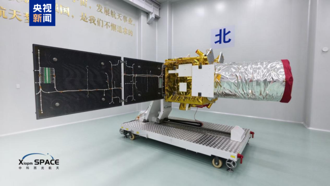
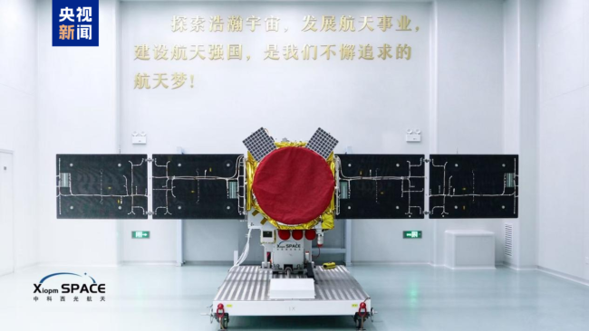

今天（21日）上午，我国自主研制的五羊星座首发星，即：先导A星（广大一号），搭乘谷神星一号海射型运载火箭，在山东日照黄海海上发射平台发射。 这标志着全球首个低纬度高频遥感观测网络正式进入组网建设阶段。 未来，五羊星座将在应急减灾、精准农业、海洋监测、港口航运等领域提供即感、即传、即用的遥感数据服务，为我国高质量发展提供空天信息支撑。

五羊星座首发星采用非太阳同步低倾角低轨设计，即卫星运行在近地轨道、轨道倾角较小，重点面向中低纬度区域开展高分辨率对地观测，定向服务南北纬35度低纬度核心区域。 五羊星座整体规划为3颗先导星+25颗业务星组网体系。全面建成后，将具备每日一次全域高分辨率覆盖、30分钟级灾害应急响应能力，推动对地观测实现三大转变：从“月度一张图”升级为“每日一张图”，从固定时段监测升级为全天时连续感知，从事后应急处置升级为实时预警预判。 大幅提升观测重访频率与数据获取时效，破解低纬度地区遥感数据获取难、应用效能不足的行业困局。

五羊星座先导A星搭载0.5米级高分相机、2米多光谱相机、30米宽幅红外载荷；后续组网业务星将集成亚米级光学、红外、中光谱、SAR雷达等全谱段探测能力。 在兼顾多尺度空间分辨率协同观测基础上，实现可见光、近红外、热红外精细光谱观测，叠加SAR全天候成像优势，支持全天24小时连续光谱观测，有效突破传统太阳同步卫星每日仅约一小时观测窗口的固有局限，达成全天时、全天候、全要素对地观测。 卫星搭载星上数据原生加密、星上智能处理、星地星端融合通信能力，打通数据采集、处理、传输、应用全链条，支撑遥感数据即感、即传、即用的近实时服务。
未来，随着五羊星座持续组网迭代、规模化投入应用，将持续填补全球低纬度高精度遥感观测空白，重塑国际对地观测产业格局，为我国防灾减灾、农林牧渔、海洋管控等发挥重要作用，赋能经济高质量发展。(责任编辑：zx0204)